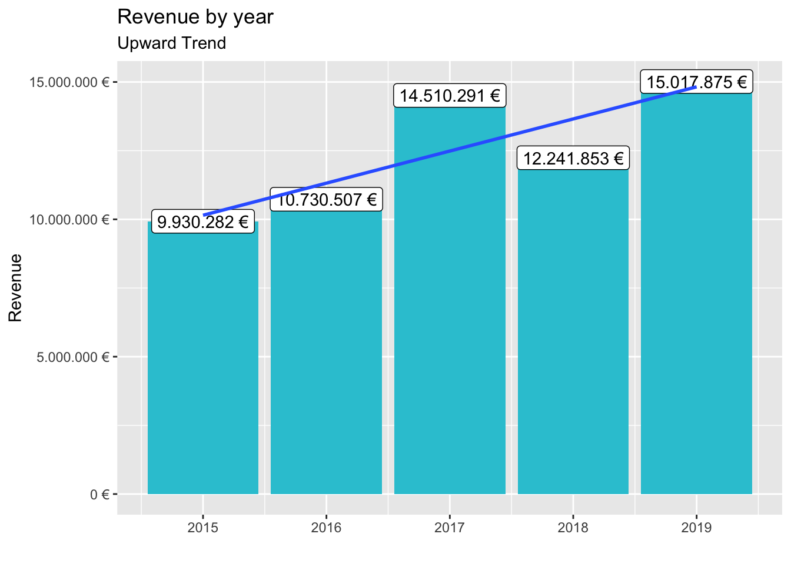
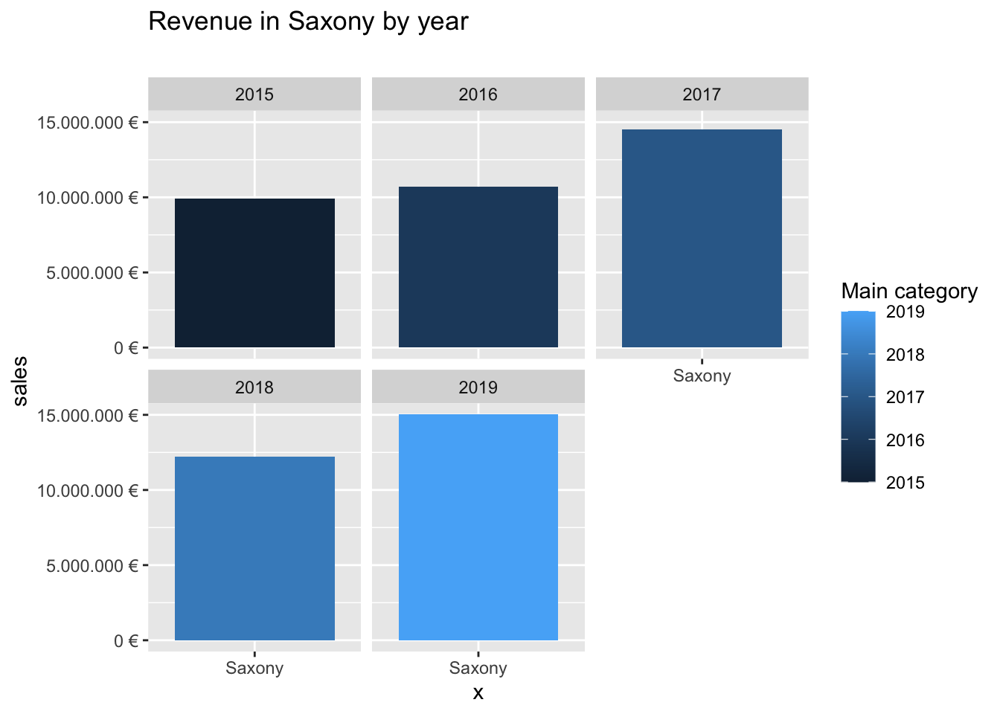

Journal (reproducible report)
Julian Glaßmeyer
2020-11-25
Last compiled: 2020-12-04
1 Business Data Science Basics TUHH
1.1 Load libraries —-
library(tidyverse)
library(readxl)
library(lubridate)
library(writexl)
library(rvest) # HTML Hacking & Web Scraping
library(xopen) # Quickly opening URLs
library(jsonlite) # converts JSON files to R objects
library(glue) # concatenate strings
library(stringi) # character string/text processing
library(httr)
library(glue)
library(jsonlite)
library(vroom)
library(tictoc)bikes_tbl <- read_excel(path = "00_data/01_bike_sales/01_raw_data/bikes.xlsx")
orderlines_tbl <- read_excel("00_data/01_bike_sales/01_raw_data/orderlines.xlsx")
bikeshops_tbl <- read_excel("00_data/01_bike_sales/01_raw_data/bikeshops.xlsx")bike_orderlines_joined_tbl <- orderlines_tbl %>%
left_join(bikes_tbl, by = c("product.id" = "bike.id")) %>%
left_join(bikeshops_tbl, by = c("customer.id" = "bikeshop.id"))bike_orderlines_wrangled_tbl <- bike_orderlines_joined_tbl %>%
separate(col = category,
into = c("category.1", "category.2", "category.3"),
sep = " - ") %>%
mutate(total.price = price * quantity) %>%
select(-...1, -gender) %>%
select(-ends_with(".id")) %>%
bind_cols(bike_orderlines_joined_tbl %>% select(order.id)) %>%
select(order.id, contains("order"), contains("model"), contains("category"),
price, quantity, total.price,
everything()) %>%
rename(bikeshop = name) %>%
set_names(names(.) %>% str_replace_all("\\.", "_"))sales_by_year_tbl <- bike_orderlines_wrangled_tbl %>%
select(order_date, total_price) %>%
mutate(year = year(order_date)) %>%
group_by(year) %>%
summarize(sales = sum(total_price)) %>%
mutate(sales_text = scales::dollar(sales, big.mark = ".",
decimal.mark = ",",
prefix = "",
suffix = " €"))sales_by_year_tbl %>%
ggplot(aes(x = year, y = sales)) +
geom_col(fill = "#2DC6D6") +
geom_label(aes(label = sales_text)) +
geom_smooth(method = "lm", se = FALSE) +
scale_y_continuous(labels = scales::dollar_format(big.mark = ".",
decimal.mark = ",",
prefix = "",
suffix = " €")) +
labs(
title = "Revenue by year",
subtitle = "Upward Trend",
x = "",
y = "Revenue"
)
sales_by_year_cat_1_tbl <- bike_orderlines_wrangled_tbl %>%
select(order_date, total_price, category_1) %>%
mutate(year = year(order_date)) %>%
group_by(year, category_1) %>%
summarise(sales = sum(total_price)) %>%
ungroup() %>%
mutate(sales_text = scales::dollar(sales, big.mark = ".",
decimal.mark = ",",
prefix = "",
suffix = " €"))sales_by_year_cat_1_tbl %>%
ggplot(aes(x = year, y = sales, fill = category_1)) +
geom_col() +
facet_wrap(~ category_1) +
scale_y_continuous(labels = scales::dollar_format(big.mark = ".",
decimal.mark = ",",
prefix = "",
suffix = " €")) +
labs(
title = "Revenue by year and main category",
subtitle = "Each product category has an upward trend",
fill = "Main category"
)
bike_orderlines_wrangled_tbl %>%
write_xlsx("00_data/01_bike_sales/02_wrangled_data/bike_orderlines.xlsx")bike_orderlines_wrangled_tbl %>%
write_csv("00_data/01_bike_sales/02_wrangled_data/bike_orderlines.csv")bike_orderlines_wrangled_tbl %>%
write_rds("00_data/01_bike_sales/02_wrangled_data/bike_orderlines.rds")2 Challenge 1
bike_state_orderlines_wrangled_tbl <- bike_orderlines_joined_tbl %>%
separate(col = category,
into = c("category.1", "category.2", "category.3"),
sep = " - ") %>%
separate(col = location,
into = c("city", "state"),
sep = ", ") %>%
mutate(total.price = price * quantity) %>%
select(-...1, -gender) %>%
select(-ends_with(".id")) %>%
bind_cols(bike_orderlines_joined_tbl %>% select(order.id)) %>%
select(order.id, contains("order"), contains("model"), contains("category"),
price, quantity, total.price,
everything()) %>%
rename(bikeshop = name) %>%
set_names(names(.) %>% str_replace_all("\\.", "_"))sales_by_state_tbl <- bike_state_orderlines_wrangled_tbl %>%
select(state, total_price) %>%
group_by(state) %>%
summarize(sales = sum(total_price)) %>%
mutate(sales_text = scales::dollar(sales, big.mark = ".",
decimal.mark = ",",
prefix = "",
suffix = " €"))sales_by_state_tbl## # A tibble: 12 x 3
## state sales sales_text
## <chr> <dbl> <chr>
## 1 Baden-Württemberg 6521090 6.521.090 €
## 2 Bavaria 6742819 6.742.819 €
## 3 Berlin 1128433 1.128.433 €
## 4 Bremen 10653499 10.653.499 €
## 5 Hamburg 3874756 3.874.756 €
## 6 Hesse 1558901 1.558.901 €
## 7 Lower Saxony 4107115 4.107.115 €
## 8 Mecklenburg-Western Pomerania 618974 618.974 €
## 9 North Rhine-Westphalia 21200613 21.200.613 €
## 10 Saxony 2230245 2.230.245 €
## 11 Saxony-Anhalt 569614 569.614 €
## 12 Schleswig-Holstein 3224749 3.224.749 €2.1 Visualization
sales_by_state_tbl %>%
ggplot(aes(x = state, y = sales)) +
geom_col(fill = "#2DC6D6") +
geom_label(aes(label = sales_text)) +
geom_smooth(method = "lm", se = FALSE) +
theme(axis.text.x = element_text(angle = 45, hjust = 1)) +
scale_y_continuous(labels = scales::dollar_format(big.mark = ".",
decimal.mark = ",",
prefix = "",
suffix = " €")) +
labs(
title = "Revenue by State",
subtitle = "",
x = "State",
y = "Revenue"
)
3 Challenge 2
sales_by_year_state_tbl <- bike_state_orderlines_wrangled_tbl %>%
select(order_date, total_price, state) %>%
mutate(year = year(order_date)) %>%
group_by(year, state) %>%
summarise(sales = sum(total_price)) %>%
ungroup() %>%
mutate(sales_text = scales::dollar(sales, big.mark = ".",
decimal.mark = ",",
prefix = "",
suffix = " €"))#Visualization
3.1 Baden-Württemberg
sales_by_year_state_tbl %>%
ggplot(aes(x = "Baden-Württemberg", y = sales, fill = year)) +
geom_col() +
facet_wrap(~ year) +
scale_y_continuous(labels = scales::dollar_format(big.mark = ".",
decimal.mark = ",",
prefix = "",
suffix = " €")) +
labs(
title = "Revenue in Baden-Württemberg by year",
subtitle = "",
fill = "Main category"
)
3.2 Bavaria
sales_by_year_state_tbl %>%
ggplot(aes(x = "Bavaria", y = sales, fill = year)) +
geom_col() +
facet_wrap(~ year) +
scale_y_continuous(labels = scales::dollar_format(big.mark = ".",
decimal.mark = ",",
prefix = "",
suffix = " €")) +
labs(
title = "Revenue in Bavaria by year",
subtitle = "",
fill = "Main category"
)
3.3 Berlin
sales_by_year_state_tbl %>%
ggplot(aes(x = "Berlin", y = sales, fill = year)) +
geom_col() +
facet_wrap(~ year) +
scale_y_continuous(labels = scales::dollar_format(big.mark = ".",
decimal.mark = ",",
prefix = "",
suffix = " €")) +
labs(
title = "Revenue in Berlin by year",
subtitle = "",
fill = "Main category"
)3.4 Bremen
sales_by_year_state_tbl %>%
ggplot(aes(x = "Bremen", y = sales, fill = year)) +
geom_col() +
facet_wrap(~ year) +
scale_y_continuous(labels = scales::dollar_format(big.mark = ".",
decimal.mark = ",",
prefix = "",
suffix = " €")) +
labs(
title = "Revenue in Bremen by year",
subtitle = "",
fill = "Main category"
)
3.5 Hamburg
sales_by_year_state_tbl %>%
ggplot(aes(x = "Hamburg", y = sales, fill = year)) +
geom_col() +
facet_wrap(~ year) +
scale_y_continuous(labels = scales::dollar_format(big.mark = ".",
decimal.mark = ",",
prefix = "",
suffix = " €")) +
labs(
title = "Revenue in Hamburg by year",
subtitle = "",
fill = "Main category"
)
3.6 Hesse
sales_by_year_state_tbl %>%
ggplot(aes(x = "Hesse", y = sales, fill = year)) +
geom_col() +
facet_wrap(~ year) +
scale_y_continuous(labels = scales::dollar_format(big.mark = ".",
decimal.mark = ",",
prefix = "",
suffix = " €")) +
labs(
title = "Revenue in Hesse by year",
subtitle = "",
fill = "Main category"
)
3.7 Lower Saxony
sales_by_year_state_tbl %>%
ggplot(aes(x = "Lower Saxony", y = sales, fill = year)) +
geom_col() +
facet_wrap(~ year) +
scale_y_continuous(labels = scales::dollar_format(big.mark = ".",
decimal.mark = ",",
prefix = "",
suffix = " €")) +
labs(
title = "Revenue in Lower Saxony by year",
subtitle = "",
fill = "Main category"
)3.8 Mecklenburg-Western Pomerania
sales_by_year_state_tbl %>%
ggplot(aes(x = "Mecklenburg-Western Pomerania", y = sales, fill = year)) +
geom_col() +
facet_wrap(~ year) +
scale_y_continuous(labels = scales::dollar_format(big.mark = ".",
decimal.mark = ",",
prefix = "",
suffix = " €")) +
labs(
title = "Revenue in Mecklenburg-Western Pomerania by year",
subtitle = "",
fill = "Main category"
)3.9 North Rhine-Westphalia
sales_by_year_state_tbl %>%
ggplot(aes(x = "North Rhine-Westphalia", y = sales, fill = year)) +
geom_col() +
facet_wrap(~ year) +
scale_y_continuous(labels = scales::dollar_format(big.mark = ".",
decimal.mark = ",",
prefix = "",
suffix = " €")) +
labs(
title = "Revenue in North Rhine-Westphalia by year",
subtitle = "",
fill = "Main category"
)
3.10 Saxony
sales_by_year_state_tbl %>%
ggplot(aes(x = "Saxony", y = sales, fill = year)) +
geom_col() +
facet_wrap(~ year) +
scale_y_continuous(labels = scales::dollar_format(big.mark = ".",
decimal.mark = ",",
prefix = "",
suffix = " €")) +
labs(
title = "Revenue in Saxony by year",
subtitle = "",
fill = "Main category"
)
3.11 Saxony-Anhalt
sales_by_year_state_tbl %>%
ggplot(aes(x = "Saxony-Anhalt", y = sales, fill = year)) +
geom_col() +
facet_wrap(~ year) +
scale_y_continuous(labels = scales::dollar_format(big.mark = ".",
decimal.mark = ",",
prefix = "",
suffix = " €")) +
labs(
title = "Revenue in Saxony-Anhalt by year",
subtitle = "",
fill = "Main category"
)3.12 Schleswig-Holstein
sales_by_year_state_tbl %>%
ggplot(aes(x = "Schleswig-Holstein", y = sales, fill = year)) +
geom_col() +
facet_wrap(~ year) +
scale_y_continuous(labels = scales::dollar_format(big.mark = ".",
decimal.mark = ",",
prefix = "",
suffix = " €")) +
labs(
title = "Revenue in Schleswig-Holstein by year",
subtitle = "",
fill = "Main category"
)
4 Data Acquisition
4.1 Weather Data for Hamburg
hamburg_weather <- GET("http://api.openweathermap.org/data/2.5/weather?q=Hamburg,DE&APPID=fc851c17b49d940f2315af23e7efb62d")
hamburg_weather## Response [http://api.openweathermap.org/data/2.5/weather?q=Hamburg,DE&APPID=fc851c17b49d940f2315af23e7efb62d]
## Date: 2020-11-29 17:11
## Status: 200
## Content-Type: application/json; charset=utf-8
## Size: 465 BrawToChar(hamburg_weather$content)## [1] "{\"coord\":{\"lon\":10,\"lat\":53.55},\"weather\":[{\"id\":803,\"main\":\"Clouds\",\"description\":\"broken clouds\",\"icon\":\"04n\"}],\"base\":\"stations\",\"main\":{\"temp\":276.7,\"feels_like\":273.11,\"temp_min\":276.15,\"temp_max\":277.15,\"pressure\":1027,\"humidity\":86},\"visibility\":10000,\"wind\":{\"speed\":2.6,\"deg\":310},\"clouds\":{\"all\":75},\"dt\":1606669618,\"sys\":{\"type\":1,\"id\":1263,\"country\":\"DE\",\"sunrise\":1606633851,\"sunset\":1606662384},\"timezone\":3600,\"id\":2911298,\"name\":\"Hamburg\",\"cod\":200}"hamburg_weather %>%
.$content %>%
rawToChar() %>%
fromJSON()## $coord
## $coord$lon
## [1] 10
##
## $coord$lat
## [1] 53.55
##
##
## $weather
## id main description icon
## 1 803 Clouds broken clouds 04n
##
## $base
## [1] "stations"
##
## $main
## $main$temp
## [1] 276.7
##
## $main$feels_like
## [1] 273.11
##
## $main$temp_min
## [1] 276.15
##
## $main$temp_max
## [1] 277.15
##
## $main$pressure
## [1] 1027
##
## $main$humidity
## [1] 86
##
##
## $visibility
## [1] 10000
##
## $wind
## $wind$speed
## [1] 2.6
##
## $wind$deg
## [1] 310
##
##
## $clouds
## $clouds$all
## [1] 75
##
##
## $dt
## [1] 1606669618
##
## $sys
## $sys$type
## [1] 1
##
## $sys$id
## [1] 1263
##
## $sys$country
## [1] "DE"
##
## $sys$sunrise
## [1] 1606633851
##
## $sys$sunset
## [1] 1606662384
##
##
## $timezone
## [1] 3600
##
## $id
## [1] 2911298
##
## $name
## [1] "Hamburg"
##
## $cod
## [1] 2004.2 Scraping Rose website - Road bikes with prices
url_rennrad <- "https://www.rosebikes.de/fahrräder/rennrad"
html_rennrad <- read_html(url_rennrad)
rennrad_tbl <- html_rennrad %>%
html_nodes(css = ".catalog-category-bikes__title") %>%
html_text() %>%
enframe(name = "position", value = "family_class") %>%
mutate(
family_class = str_glue("#{family_class}")
)
rennrad_prices_tbl <- html_rennrad %>%
html_nodes(css = ".catalog-category-bikes__price-title") %>%
html_text() %>%
enframe(name = "position", value = "price") %>%
mutate(
price = str_glue("#{price}")
)
bind_cols(rennrad_tbl, rennrad_prices_tbl)## # A tibble: 9 x 4
## position...1 family_class position...3 price
## <int> <glue> <int> <glue>
## 1 1 "#\n\nPRO SL DISC\n\n" 1 "#\nab 1.599,00 €\n"
## 2 2 "#\n\nPRO SL\n\n" 2 "#\nab 1.199,00 €\n"
## 3 3 "#\n\nREVEAL FOUR DISC\n\n" 3 "#\nab 2.499,00 €\n"
## 4 4 "#\n\nREVEAL FOUR\n\n" 4 "#\nab 2.099,00 €\n"
## 5 5 "#\n\nREVEAL SIX DISC\n\n" 5 "#\nab 3.499,00 €\n"
## 6 6 "#\n\nX-LITE FOUR DISC\n\n" 6 "#\nab 2.699,00 €\n"
## 7 7 "#\n\nX-LITE FOUR\n\n" 7 "#\nab 2.199,00 €\n"
## 8 8 "#\n\n X-LITE SIX DISC\n\n" 8 "#\nab 3.899,00 €\n"
## 9 9 "#\n\nX-LITE SIX\n\n" 9 "#\nab 3.499,00 €\n"5 Data Wrangling
col_types <- list(
id = col_character(),
type = col_character(),
number = col_character(),
country = col_character(),
date = col_date("%Y-%m-%d"),
abstract = col_character(),
title = col_character(),
kind = col_character(),
num_claims = col_double(),
filename = col_character(),
withdrawn = col_double()
)
patent_tbl <- vroom(
file = "patent.tsv",
delim = "\t",
col_types = col_types,
na = c("", "NA", "NULL")
)
class(patent_tbl)## [1] "tbl_df" "tbl" "data.frame"setDT(patent_tbl)
class(patent_tbl)## [1] "data.table" "data.frame"col_types <- list(
id = col_character(),
type = col_character(),
number = col_character(),
country = col_character(),
date = col_date("%Y-%m-%d"),
abstract = col_character(),
title = col_character(),
kind = col_character(),
num_claims = col_double(),
filename = col_character(),
withdrawn = col_double()
)
assignee_tbl <- vroom(
file = "assignee.tsv",
delim = "\t",
col_types = col_types,
na = c("", "NA", "NULL")
)
class(assignee_tbl)## [1] "tbl_df" "tbl" "data.frame"setDT(assignee_tbl)
class(assignee_tbl)## [1] "data.table" "data.frame"col_types <- list(
id = col_character(),
type = col_character(),
number = col_character(),
country = col_character(),
date = col_date("%Y-%m-%d"),
abstract = col_character(),
title = col_character(),
kind = col_character(),
num_claims = col_double(),
filename = col_character(),
withdrawn = col_double()
)
patent_assignee_tbl <- vroom(
file = "patent_assignee.tsv",
delim = "\t",
col_types = col_types,
na = c("", "NA", "NULL")
)
class(patent_assignee_tbl)## [1] "tbl_df" "tbl" "data.frame"setDT(patent_assignee_tbl)
class(patent_assignee_tbl)## [1] "data.table" "data.frame"col_types <- list(
id = col_character(),
type = col_character(),
number = col_character(),
country = col_character(),
date = col_date("%Y-%m-%d"),
abstract = col_character(),
title = col_character(),
kind = col_character(),
num_claims = col_double(),
filename = col_character(),
withdrawn = col_double()
)
uspc_tbl <- vroom(
file = "uspc.tsv",
delim = "\t",
col_types = col_types,
na = c("", "NA", "NULL")
)5.1 Question 1
5.1.1 Patent Dominance: What US company / corporation has the most patents? List the 10 US companies with the most assigned/granted patents in 2014.
setnames(assignee_tbl, "id", "assignee_id")
combined_data <- merge(x = patent_assignee_tbl, y = assignee_tbl,
by = "assignee_id",
all.x = TRUE,
all.y = FALSE)
combined_data_us <- combined_data %>%
filter(type == "2")
combined_data_us %>%
group_by(organization) %>%
summarise(
count = n(),
) %>%
ungroup() %>%
arrange(desc(count)) %>%
head(10)## # A tibble: 10 x 2
## organization count
## <chr> <int>
## 1 International Business Machines Corporation 7547
## 2 Microsoft Corporation 3165
## 3 Google Inc. 2668
## 4 QUALCOMM Incorporated 2597
## 5 Apple Inc. 2201
## 6 General Electric Company 1873
## 7 Hewlett-Packard Development Company, L.P. 1638
## 8 AT&T INTELLECTUAL PROPERTY I, L.P. 1625
## 9 Intel Corporation 1616
## 10 GM Global Technology Operations LLC 15335.2 Question 2
5.2.1 What US company had the most patents granted in April 2014?
setnames(patent_tbl, "id", "patent_id")
combined_data_us_date <- merge(x = combined_data_us, y = patent_tbl,
by = "patent_id",
all.x = TRUE,
all.y = FALSE)
combined_data_us_date$date <- as.Date(combined_data_us_date$date, format= "%Y-%m-%d")
combined_data_us_april <- subset(combined_data_us_date, date> "2014-04-01" & date < "2014-04-30")
combined_data_us_april %>%
group_by(organization) %>%
summarise(
count = n(),
) %>%
ungroup() %>%
arrange(desc(count)) %>%
head(10)## # A tibble: 10 x 2
## organization count
## <chr> <int>
## 1 International Business Machines Corporation 409
## 2 Microsoft Corporation 269
## 3 Google Inc. 213
## 4 QUALCOMM Incorporated 196
## 5 Apple Inc. 185
## 6 General Electric Company 155
## 7 AT&T INTELLECTUAL PROPERTY I, L.P. 141
## 8 GM Global Technology Operations LLC 120
## 9 Hewlett-Packard Development Company, L.P. 116
## 10 Intel Corporation 1125.3 Question 3
combined_data_3 <- merge(x = patent_assignee_tbl, y = assignee_tbl,
by = "assignee_id",
all.x = TRUE,
all.y = FALSE)
combined_data_3_uspc <- merge(x = uspc_tbl, y = combined_data_3,
by = "patent_id",
all.x = TRUE,
all.y = FALSE)5.3.1 Top 5 USPTO main classes
combined_data_3_uspc %>%
group_by(mainclass_id) %>%
summarise(
count = n(),
) %>%
ungroup() %>%
arrange(desc(count)) %>%
head(5)## # A tibble: 5 x 2
## mainclass_id count
## <dbl> <int>
## 1 257 42003
## 2 455 30177
## 3 370 25885
## 4 438 20607
## 5 709 187545.3.2 Top 10 companies worldwide with most patents
combined_data_3 %>%
group_by(organization) %>%
summarise(
count = n(),
) %>%
ungroup() %>%
arrange(desc(count)) %>%
head(10)## # A tibble: 10 x 2
## organization count
## <chr> <int>
## 1 International Business Machines Corporation 7547
## 2 Samsung Electronics Co., Ltd. 5835
## 3 Canon Kabushiki Kaisha 4099
## 4 Sony Corporation 3326
## 5 Microsoft Corporation 3165
## 6 Google Inc. 2668
## 7 Kabushiki Kaisha Toshiba 2656
## 8 QUALCOMM Incorporated 2597
## 9 LG Electronics Inc. 2459
## 10 <NA> 23776 Data visualization
covid_data_tbl <- read_csv("https://opendata.ecdc.europa.eu/covid19/casedistribution/csv")6.1 Challenge 1
covid_data_tbl %>%
distinct(cases, dateRep, countriesAndTerritories) %>%
filter(countriesAndTerritories == 'Germany' |
countriesAndTerritories == 'United_Kingdom' |
countriesAndTerritories == 'Spain' |
countriesAndTerritories == 'France' |
countriesAndTerritories == 'United_States_of_America') %>%
mutate(date = lubridate::dmy(dateRep)) %>%
arrange(date) %>%
group_by(countriesAndTerritories) %>%
mutate(cumsum = cumsum(cases)) %>%
ggplot() +
geom_line(aes(x = date,
y = cumsum,
color = countriesAndTerritories))6.2 Challenge 2
world <- map_data("world")covid_data_tbl %>%
distinct(cases, dateRep, countriesAndTerritories, popData2019) %>%
filter(countriesAndTerritories == 'Germany' |
countriesAndTerritories == 'United_Kingdom' |
countriesAndTerritories == 'Spain' |
countriesAndTerritories == 'France' |
countriesAndTerritories == 'United_States_of_America')## # A tibble: 1,699 x 4
## dateRep cases countriesAndTerritories popData2019
## <chr> <dbl> <chr> <dbl>
## 1 04/12/2020 12696 France 67012883
## 2 03/12/2020 14064 France 67012883
## 3 02/12/2020 8083 France 67012883
## 4 01/12/2020 4005 France 67012883
## 5 30/11/2020 9784 France 67012883
## 6 29/11/2020 12500 France 67012883
## 7 28/11/2020 12539 France 67012883
## 8 27/11/2020 13563 France 67012883
## 9 26/11/2020 16282 France 67012883
## 10 25/11/2020 9155 France 67012883
## # … with 1,689 more rowscovid_data_tbl_rates <- covid_data_tbl %>%
mutate(across(countriesAndTerritories, str_replace_all, "_", " ")) %>%
mutate(countriesAndTerritories = case_when(
countriesAndTerritories == "United Kingdom" ~ "UK",
countriesAndTerritories == "United States of America" ~ "USA",
countriesAndTerritories == "Czechia" ~ "Czech Republic",
TRUE ~ countriesAndTerritories
)) %>%
group_by(countriesAndTerritories) %>%
summarise(total_deaths = sum(deaths), pop = mean(popData2019)) %>%
ungroup() %>%
rename(region = countriesAndTerritories)combined_data_1 <- merge(x = world, y = covid_data_tbl_rates,
by = "region",
all.x = TRUE,
all.y = FALSE)plot_data_1 <- combined_data_1 %>%
distinct(pop, region, long, lat, total_deaths) %>%
group_by(region) %>%
mutate(pct = (total_deaths / pop)*100) %>%
ungroup()6.2.1 Visualization of the distribution of the mortality rate worldwide.
plot_data_1 %>% ggplot() +
geom_map (aes(map_id = region, fill = pct), map = world, color = "white") +
expand_limits(x = world$long, y = world$lat) +
scale_fill_viridis_c(option = "D")